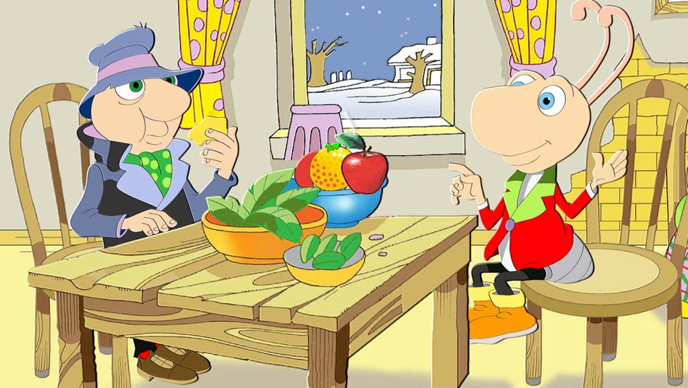

Hoş Geldiniz!
Aşağıdan izlemek istediğiniz videoya tıklayınız.
BİRLİKTE YAŞAM
Çocuk Kalbi
GÜZEL MEMLEKETİM
Memleketim Rize
BİZİ BİZ YAPANLAR
Ali ve Ayşe ile İstiklal Marşı
GELENEKSEL TÜRK OYUNLARI
Oyun oynayalım mı
SAĞLIKLI YAŞAM
Cesur Portakal

GELENEKTEN GELECEĞE
Karınca ve Ağustos Böceği
GELENEKTEN GELECEĞE
Bilmece
GELENEKTEN GELECEĞE
Daha dün annemizin
SANAT DÜNYASI
Türk kırmızısı
BİLİM VE TEKNOLOJİDE YOLCULUK
̇İlk gözlemevi Göbekli tepe mi?